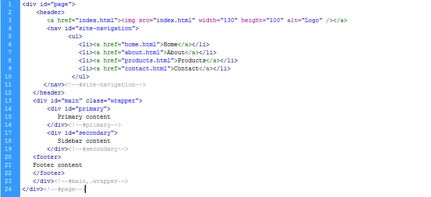

Created:02/02/2013
By: Peter Kakoma
Thank you for using Jaguza. If you have any questions that are beyond the scope of this help file, please feel free to seek support here: http://wordpress.org/support/theme/jaguza
For more detailed installation instructions, please go to http://themes.blueboltlimited.com/jaguza/installation/
Jaguza is a child theme of the Twenty Twelve theme developed by the WordPress team. You need to have Twenty Twelve installed to use Jaguza. The upside is that Twenty Twelve is pre-bundled with WordPress installations. If your install doesn't have it, please download it here
Jaguza is a fixed layout with two columns. All of the information within the main content area is nested within a div with an id of "primary". The sidebar's content is within a div with an id of "secondary". The general template structure is the same throughout the template. Here is the general structure.
If you would like to edit the color, font, or style of any elements in one of these columns, you would do the following:
body.Jaguza #primary a {
color: #someColor;
}
NB: It is better to do this from the Options panel. In your admin panel, go to Appearance > Jaguza Options > Typography
.
If you find that your new style is not overriding, it is most likely because of a specificity problem. Scroll down in your CSS file and make sure that there isn't a similar style that has more weight.
I.E.
body.Jaguza #wrap #primary a {
color: #someColor;
}
So, to ensure that your new styles are applied, make sure that they carry enough "weight" and that there isn't a style lower in the CSS file that is being applied after yours. Again, it is way easier to do all this from the Jaguza options panel. In your admin panel, go to Appearance > Jaguza Options
I'm using three CSS files in this theme. The first one is the Twenty Twelve sylesheet (Remember, Twenty Twelve is the parent theme). This file contains general styling, such as anchor tag colors, font-sizes, browser-specific overides, etc.
The second file contains all of the specific styling for Jaguza. The file is separated into sections using:
/* =HEADER Section --------------------------------------------------------------*/ some code /* =MAIN Section --------------------------------------------------------------*/ some code /* =SIDEBAR Section --------------------------------------------------------------*/ some code /* =FOOTER Section --------------------------------------------------------------*/ some code etc, etc.In each of these cases, 'some code' is further divided into:
/* === SECTION Name: Jaguza-specific styling === */
and
/* === SECTION Name: Overriding Twenty Twelve styling === */
e.g
/* === HEADER Section: Jaguza-specific styling === */
and
/* === HEADER Section: Overriding Twenty Twelve styling === */
This is to clearly show what is unique styling and which styling over-rides Twenty Twelve styling. If you would like to edit a specific section of the site, simply find the appropriate label in the CSS file, and then scroll down until you find the appropriate style that needs to be edited.
By now you may have forgotten there is a third CSS file. There is. The third file, jaguza.options.css, stores customizations made using the Jaguza Options Panel(In the Admin panel at Appearance > Jaguza Options). It overides the two other CSS files.Make changes, hit 'Save All Changes' and see it in action
It is worth mentioning the other file in the css folder; styles.php: This file doesn't really count as a css file. It is never loaded. It is used to generate jaguza.options.css (talked about earlier)
Js files are stored in the js folder. Jaguza only imports one Javascript file on all pages: jaguza.js. It does the following:
Jaguza does not include files that are already pre-bundled in WordPress. jquery, jquery-ui, etc are all loaded using the default scripts included in WordPress. For a complete list of Js files pre-bundled with WordPress, go here: http://codex.wordpress.org/Function_Reference/wp_enqueue_script#Default_scripts_included_with_WordPress
I've used the following files and I'm extremely grateful to the respective authors. All their licenses are GPL-compatible
Due to its layout, Jaguza doesn't support custom image headers. Also, a maximum of 7 or so items can be comfortably added to the top menu
Once again, thank you for using this theme. I'd be glad to help you if you have any questions relating to its use. No guarantees, but I'll do my best to assist. To translate Jaguza, please get in touch (or use the .pot file pre-bundled with the theme. Share your translations so the rest of the world can benefit. I'll credit you. Promise).
To use a theme built with more fire than a dragon on meth, check out my other theme here: http://themes.blueboltlimited.com
Peter Kakoma